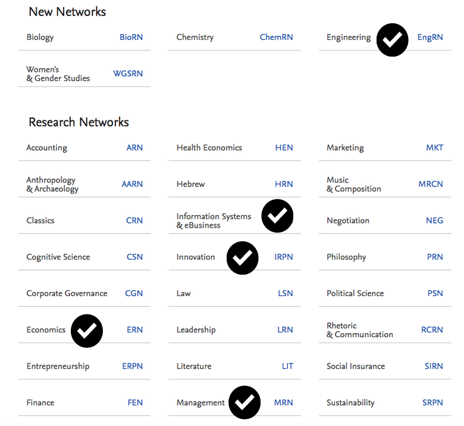

NGI ENGINEROOM
Explorations in Next Generation Internet Emerging
EU Engineroom focuses on identifying and evaluating the key enabling technologies and topics that will underpin the Next Generation Internet in 2025.
Engineroom’s three key pillars:


Consortium's partners:

Media articles: 0
Multiple gigabytes of raw
Lengthy publication process in scientific journals
Broad coverage:
SSRN's eLibrary provides 785,122 research papers from 365,129 researchers across 30 disciplines
ArXiv provides open access to 1,369,210 e-prints mostly in STEM fields

Sources
Unique terms: 0+
Media articles: 0
Working papers: 0
Analysis period: two years and three months
Multiple gigabytes of raw
and processed data
Why ArXiv and SSRN?
SSRN research networks (hover to show)
Methodology
Project Goal and General Idea
- Major aim is to identify key technologies determining the development of Internet until 2025
- Strong focus on the relationship between technological areas and social issues
- Data-driven approach with heterogeneous sources of data
Trend analysis
- Analysis based on the frequency of appearances for all unigrams and bigrams in the texts
- Frequency: number of appearances of every term divided by the number of published articles (for every month and source)
- Weighted average in the case of online news
- Average monthly change in the analised term's frequency is calculated by OLS regressions
- The coefficient reveals the trending unigrams and bigrams
Co-occurrence analysis
- Exploring the relationship between topics
- Pairs of terms which are mentioned together in media articles
- The number of articles containing both terms is divided by the number of articles including our previously identified keyword of interest for every media website
- A single index is constructed for all word pairs by weighted average (with the same weights as in the case of frequencies)
Wikipedia network analysis
- Matching the keywords to Wikipedia articles and parsing their text to extract hyperlinks
- Generating the network of hyperlinks that connects the articles with one another
- Using a community detection algorithm (the Louvain method) to identify clusters of nodes
Main Programming Tools
Topic identification
132 most trending NGI related keywords are identified
Grouped into 21 wider areas
The size of the bubble is based on the regression coefficient
Bigger bubble: more robust trend
The size of the bubble is based on the regression coefficient
Bigger bubble: more robust trend
Topic co-occurrence
The goal is to dive deeper in emerging technologies
Relationship between social issues and technology
These pairs frequently appear together in articles
News co-occurrence
Reddit co-occurrence
Trend robustness
Issue mapping
Articles are classified in two dimensions: EU/US, social issue/technology
EU axis: articles from European sources or concerning Europe
Social issues axis: articles containing words from a pre-defined list of social topics
Mapping trending words with article type based on no. of occurences
Top right corner: EU articles on social issues
Bottom left corner: US articles on technology
Charts
Application to explore trending keywords by source
Common terms: compare the trend of the keyword across sources
Case study
Topic clusters around online privacy
Online privacy is a widely discussed issue within the academia.
In order to identify main reseach topics we have done a quick topic modeling excercise. First we have web-scraped working papers related to online privacy from the perspective of
Social Sciences: SSRN.
 On this dataset we have performed document clustering using tf-idf, multidimensional scaling, k-means and pyLDAvis.
On this dataset we have performed document clustering using tf-idf, multidimensional scaling, k-means and pyLDAvis.
The preliminary results:
SSRN topic clusters around online privacy
Wikipedia
Network of trending keywords (based on arXiv, SSRN and Techno Media)
Expanded Network of trending keywords (based on arXiv, SSRN and Techno Media)
Network around NGI related technologies
Network around NGI related social issues and values keywords
Other sources
Comments on Reddit can identify related technologies with widespread adoption potential
they are pseudonymous and more democratic
About
EU ENGINEROOM has received funding from the European Union's Horizon 2020 research and innovation programme under the Grant Agreement no 780643. The content of this website does not represent the opinion of the European Union, and the European Union is not responsible for any use that might be made of such content.